A helicopter turns a two-day trek into a ten-minute flight and sets you down where almost no one else can stand — a remote ledge of rock, a glacier shoulder, a summit ringed by the pale towers of the Dolomites. It is the most direct way we know to the extraordinary: no long approach, no compromise on the view, just the two of you and a mountain kept entirely to yourselves. Here is everything we have learned planning helicopter elopements in the Dolomites — how the flight works, what it costs, where you can land, the paperwork, the weather, and how to make the day feel like yours.
A helicopter elopement is a very small mountain wedding with one difference: you reach your ceremony by air. A licensed alpine helicopter lifts the two of you (and, if you like, a witness or two) from a valley helipad, flies you over the peaks and sets down on an approved landing site — a ridge, a high meadow, a glacier plateau. You say your vows with the whole range beneath your feet, take portraits while the light is good, and fly back. The flight is not a transfer; it becomes half the story.
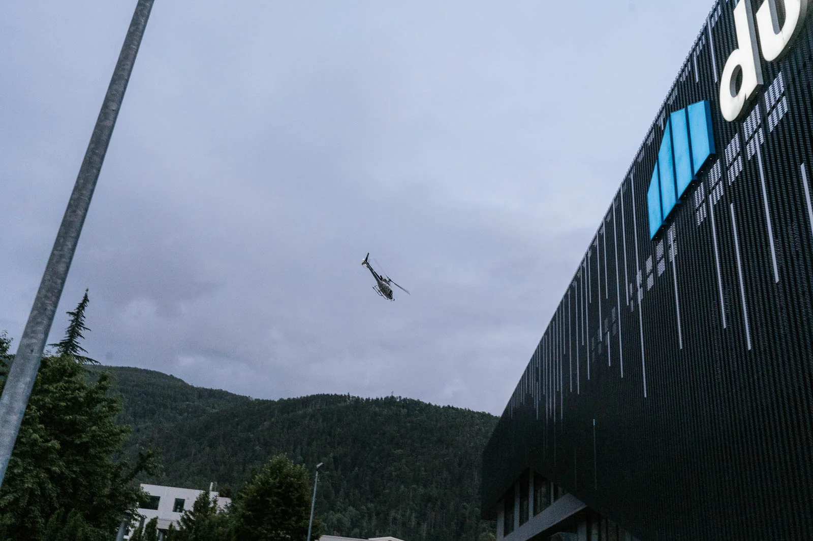
Couples come to it for different reasons. Some cannot hike far — a knee, a pregnancy, a dress that was never built for scree — and a flight gives them a summit anyway. Some simply want the one thing money can still buy in a crowded range: a place, for an hour, with no one else in it. And some love the flight for itself, the door open, the valley dropping away, the first sight of the peaks from above. Whatever brings you, the result is the same — a day that feels less like a wedding you attended and more like an adventure you took together.
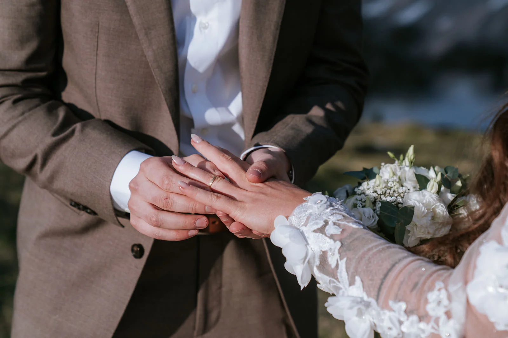
1. First call. We start with a video call to understand the day you picture — sunrise or golden hour, a bare summit or a lake, just the two of you or a few guests. 2. Landing site & operator. We match your vision to an approved landing site and book a licensed alpine operator; some sites need advance clearance. 3. Timing & weather window. We fix a date but keep a flexible window and a backup day — the flight only happens in safe conditions. 4. Getting ready. Hair, make-up and dressing happen in the valley before the flight. 5. The flight. A short set-down at the helipad, headsets on, and minutes later you step out onto the mountain. 6. Ceremony & portraits. Your words, then portraits while the pilot waits or returns at an agreed time. 7. Back down — often with time for a second location, a hut lunch or a lakeside toast.
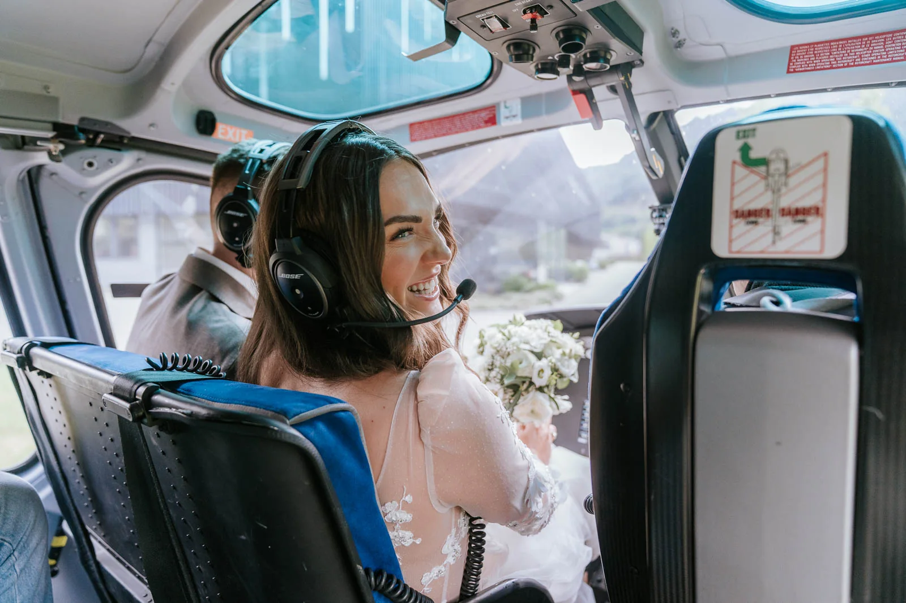
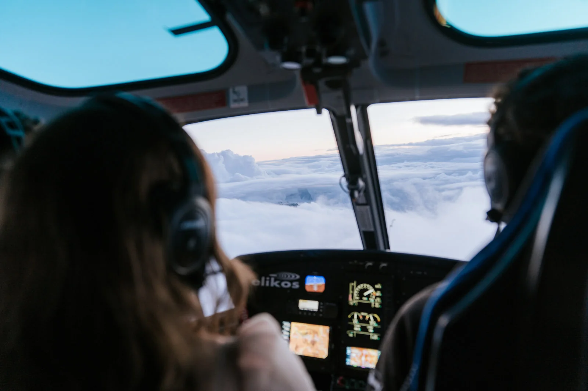
The flight itself is short and unforgettable. The rotor spins up, the machine goes light, and the valley simply falls away; a minute later the first peaks slide past the window at eye level, closer than you have ever seen them. Nobody speaks much — you just watch. Then the pilot picks the line in, the skids touch, the noise drops, and you step out into a silence so complete it rings. That contrast — from thunder to hush in thirty seconds — is a feeling couples talk about for years.
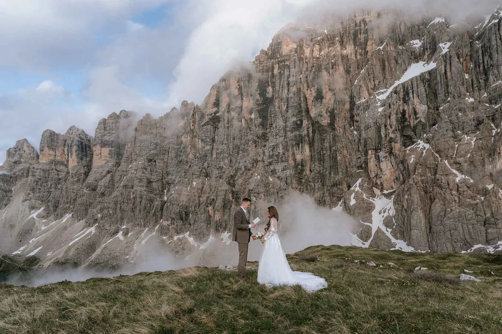
A sunrise flight. 04:30 hair & make-up in the valley · 05:30 short drive to the helipad · 06:00 lift-off as first light hits the peaks · 06:15 set down on the ridge, ceremony as the rock turns pink · 06:40 portraits in the still, empty light · 07:15 fly back · 08:00 breakfast at a mountain hut.
A full golden-hour day. 15:00 getting ready · 16:30 first flight to a high landing for portraits · 17:30 ceremony at a second spot · 18:30 the range glows at last light (enrosadira) · 19:15 fly down · 20:00 dinner on a hut terrace. Times shift with the season — we build the exact schedule around the sunrise and your landing site.
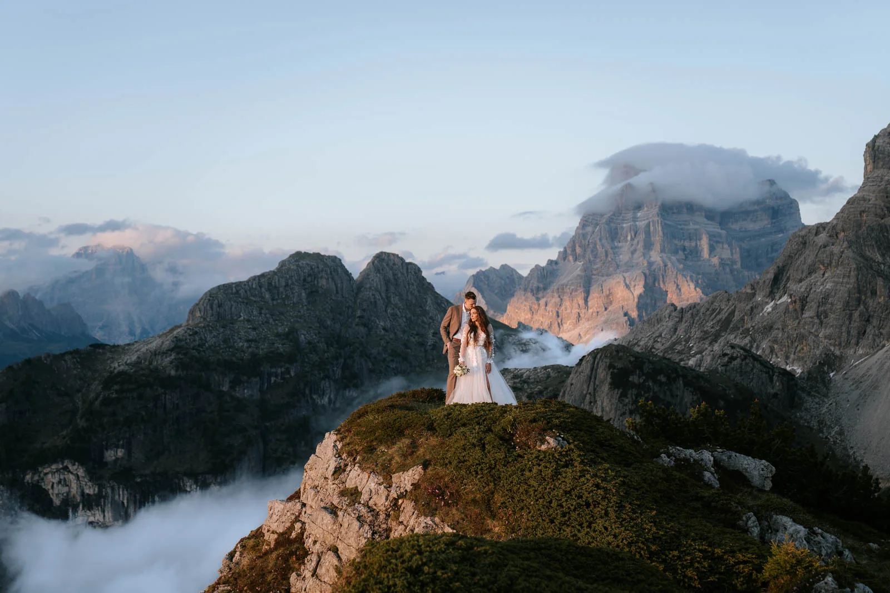
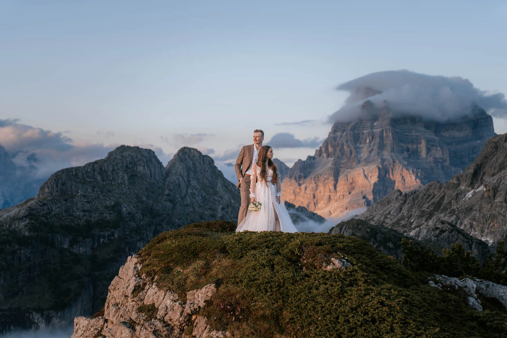
Plan from around €2,500 for the flight itself, depending on the landing point, the flight time and the number of set-downs. A remote or glacier landing costs more than a nearby ridge; a second location or a longer window adds to it. That is the flight only — photography, planning and the rest of the day are separate, and we bundle everything into one clear quote. Because weather can move the date, we always hold a flexible window and a beautiful ground-based Plan B, so a grounded morning never means a lost day.
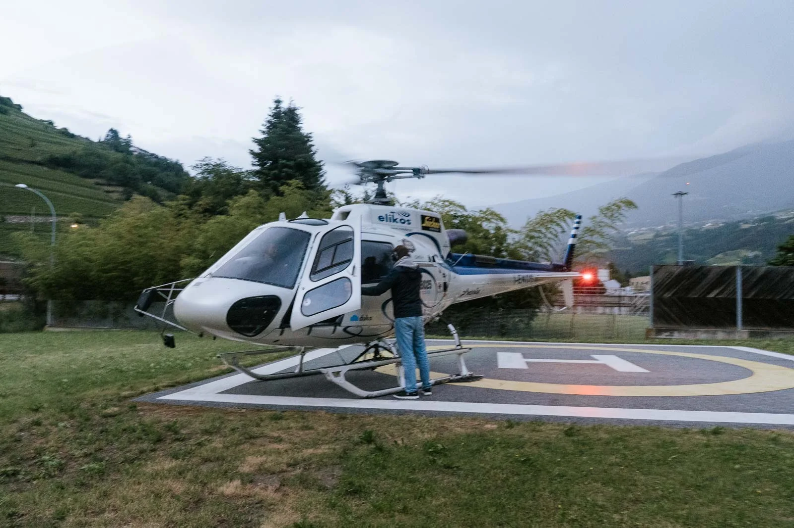
It is worth being honest about what drives the number. The bigger levers are the landing point (near vs. remote, meadow vs. glacier), the total flight time, and whether the pilot waits on the mountain or flies a second rotation to collect you. Add-ons — a second location, film, flowers, a celebrant — sit on top, and we price them plainly so nothing is a surprise on the invoice. A helicopter day is not the cheapest way to elope, but it buys something specific: an hour on a summit that would otherwise cost you two days and a lot of luck.
A flight opens ground a normal elopement never reaches: a remote rock ledge, a glacier plateau on the Marmolada, a summit that would otherwise be a two-day climb, a shoulder beneath the Cadini or Tre Cime spires. Landings are flown by licensed alpine operators onto approved sites only — not anywhere you like, and not inside every protected zone. We choose the spot together for the view, the light and what is actually permitted, and confirm it before we book.
Broadly there are three kinds of landing, and they feel different. A ridge or summit gives you exposure and a 360-degree horizon — the boldest frames, the most wind. A high meadow or shoulder is gentler underfoot, kinder to a dress and easy to move around on. A glacier plateau is the rarest and most otherworldly, a field of white with nothing human in sight. Not every one is available everywhere or in every season, and some sit inside protected zones that are off-limits; we work only where landings are permitted and safe.
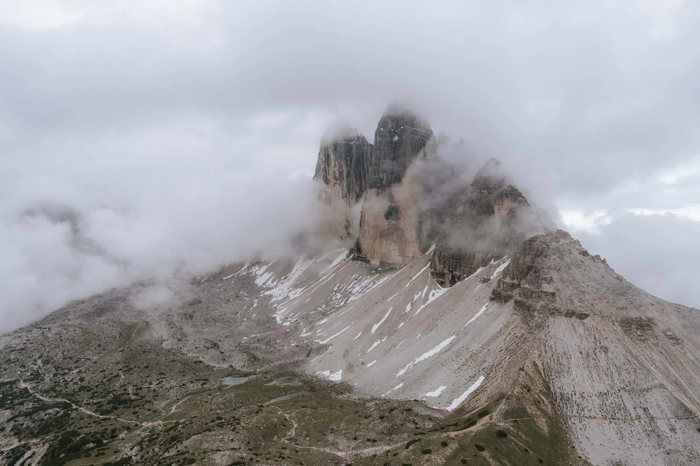

Most couples fly into Venice, Verona or Innsbruck and drive the last stretch — roughly two to three hours to the heart of the Dolomites. Getting ready happens in the valley, then a short drive to the departure helipad. From there the flight is minutes, not hours. If you would rather not self-drive, we arrange transfers so the morning stays calm.
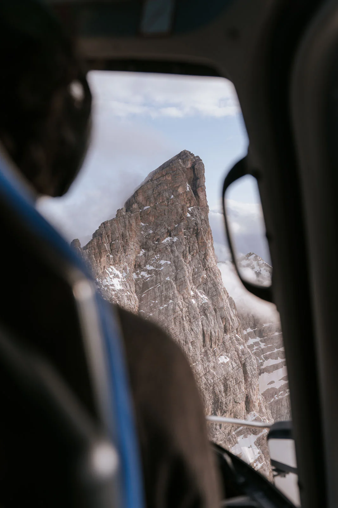
A helicopter flies only in safe conditions — good visibility, workable wind, no storm. Mountain weather turns fast, so we watch the forecast in the days before and keep a flexible window and, from our middle package up, a spare backup day. If the flight cannot go on your first morning, we move it; if a window never opens, we have a ground-based Plan B ready — a cable-car summit, a lake, a ridge you can reach on foot — so you are married beautifully either way. Fog and low cloud are not the enemy: some of the most atmospheric mountain photographs happen in exactly that light.
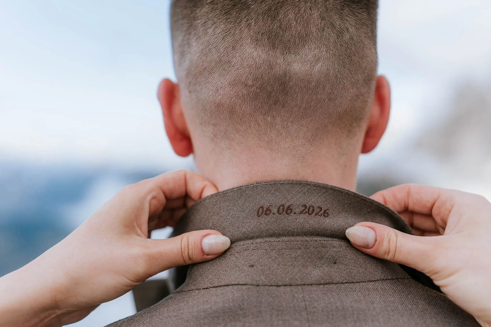
A summer flight lands you on green shoulders and warm rock at first or last light; a winter flight lands you in a white world — snow to the horizon, the peaks stripped to black and white, your breath in the air. Winter is quieter, colder and more dramatic, and it opens something summer cannot: a ceremony on a snow ridge, and, for the bold, skis on and the first run down together in gown and black tie. It asks for warm layers, good edges and a flexible eye on the weather — we handle the flight, the timing and the light, so all you bring is the nerve. Both seasons are beautiful; we help you choose the one that matches the day in your head.
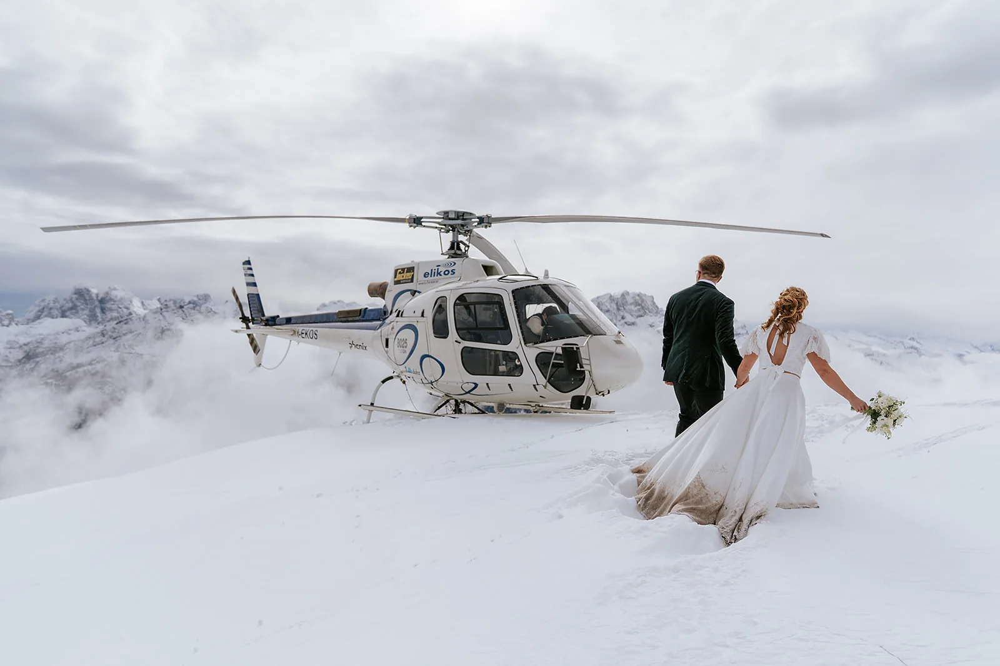
It is cold at altitude, even in August — a summit at dawn can be near freezing while the valley is warm. Bring warm layers you can slip off for photos and back on between them, and a wrap or coat for the dress. Shoes matter: pack sturdy footwear for the landing site and change into the pretty ones for the frames. Rotor wash is real — hair, veils and loose petals move in the downdraught, which often looks wonderful, but secure anything you do not want to lose. We tell you exactly what to expect for your date and landing so nothing catches you out.
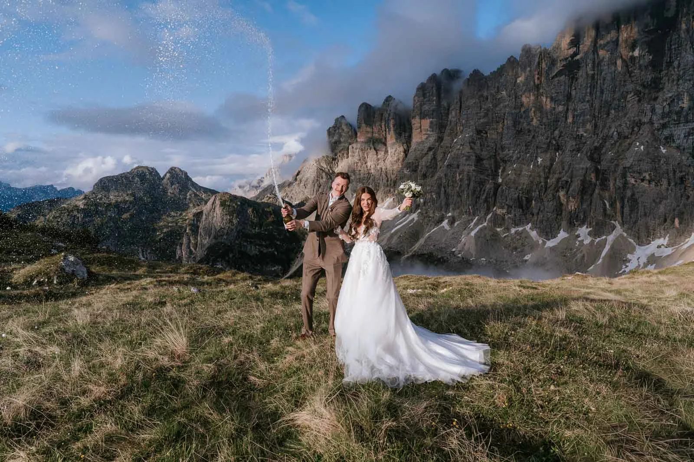
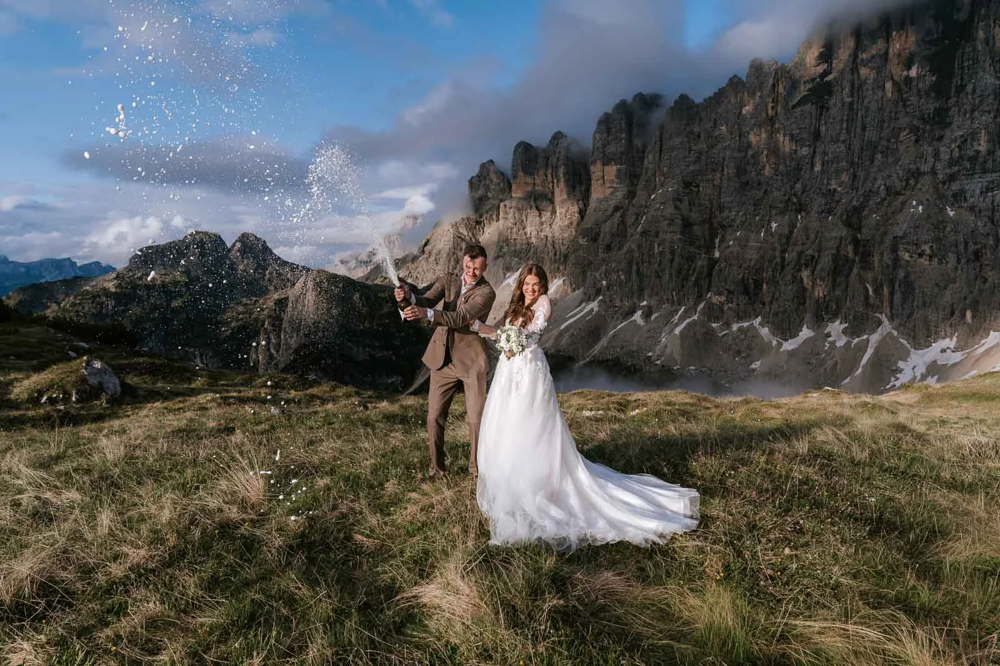
A helicopter flight is the setting, not the legal act — and there are two honest paths. A symbolic ceremony in the mountains with the legal marriage at home is what most of our couples choose: you sign the papers at your local registry before or after the trip, and up here you have the ceremony that actually matters. A legal civil marriage is also possible: in Italy for foreign nationals it means a certificate of no impediment (Nulla Osta / Ehefähigkeitszeugnis), international birth certificates, valid passports, usually an apostille and sworn translations, started months ahead; Austria offers civil ceremonies and, in some regions, approved outdoor locations. Couples from Germany, Austria, the USA and the UK all marry here — the paperwork differs by country, and we point you to the right path for yours.
One honest word on timing: the earlier you tell us, the more we can hold for you. The best summer dawn slots and every winter date fill first, and a legal marriage abroad needs its documents started months ahead. Reach out as soon as you have a rough season in mind — even before the exact date — and we will pencil in a window, sketch the day and tell you what to set in motion at home. Nothing is locked until you are ready; an early conversation simply keeps the good mornings open.
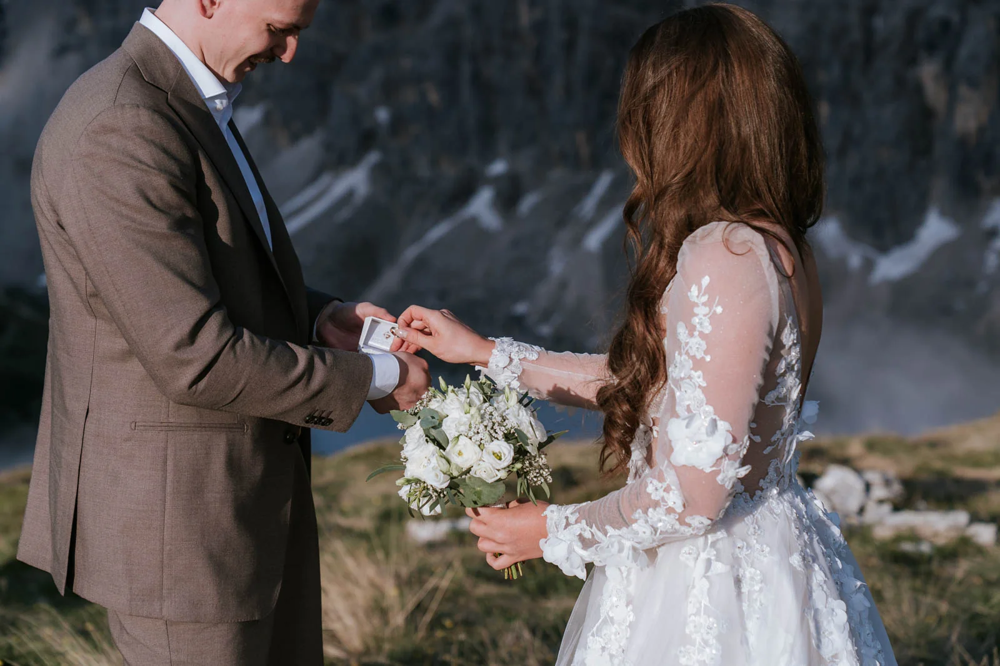
The Dolomites are the most photographed range in Europe, and the icons fill up. A flight is the cleanest way past that: you land where the day-trippers cannot follow and the summit is yours. Even so, we plan for the quiet hours — first light before the valleys wake, or last light after they empty — because empty light is always the better light.
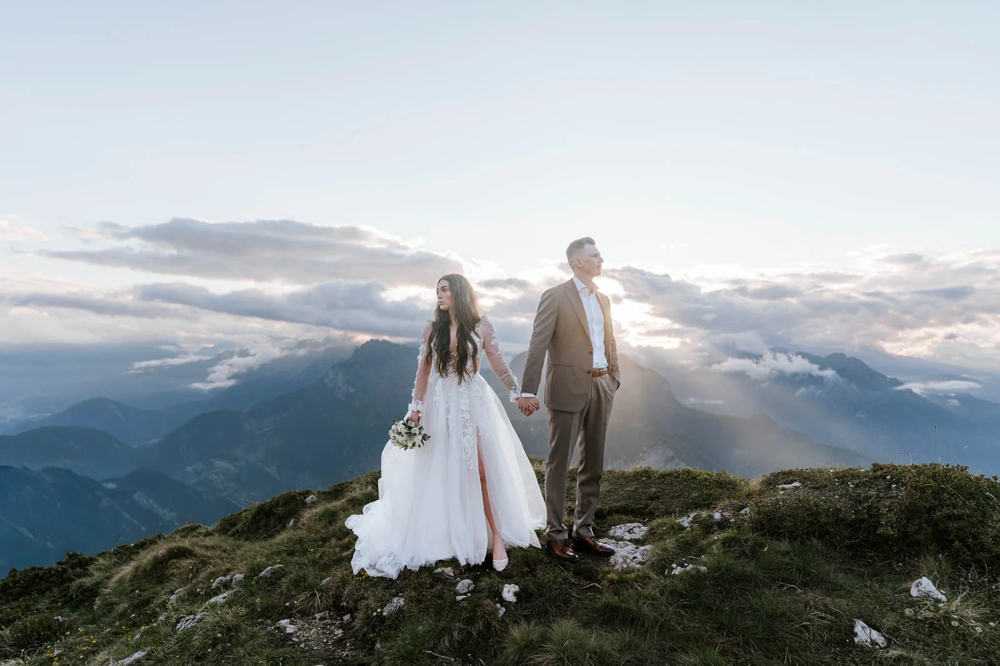
A helicopter is not a drone. Licensed alpine flights land on approved sites under strict rules; private drones, by contrast, are banned across much of the Dolomites — Lago di Braies has prohibited them since 2026, patrolled by rangers and subject to fines — and inside nature-reserve zones generally. On the ground we stay on the landing site, off the meadows and out of protected vegetation, and we leave the mountain exactly as we found it. Respect is part of being allowed back.
The flight does not have to be the whole day. Couples pair it with a slow lunch on a hut terrace, a swim in a cold alpine lake, a via ferrata or an easy hike, or simply a bottle opened somewhere with a view. The Dolomites make an easy honeymoon base too — Cortina, Val Gardena and the Alta Badia villages sit within an hour of everything, full of huts, spas and long dinners. We are happy to sketch the days around your elopement, not just the hour of it.
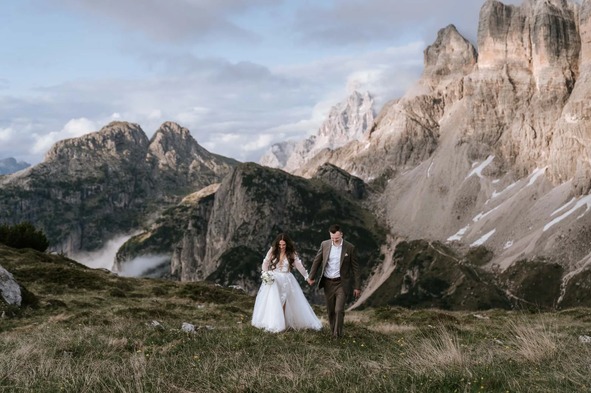
A favourite pairing is a lake to finish. After the summit, a landing or a short drive brings you to still water — a mirror of turquoise under the peaks — for the softest frames of the day and a first quiet moment as a married couple. Others want nothing planned at all after the flight: just a blanket, a view and the rest of the morning to themselves. There is no wrong way to spend the hours we are not photographing; we simply make sure they are yours.
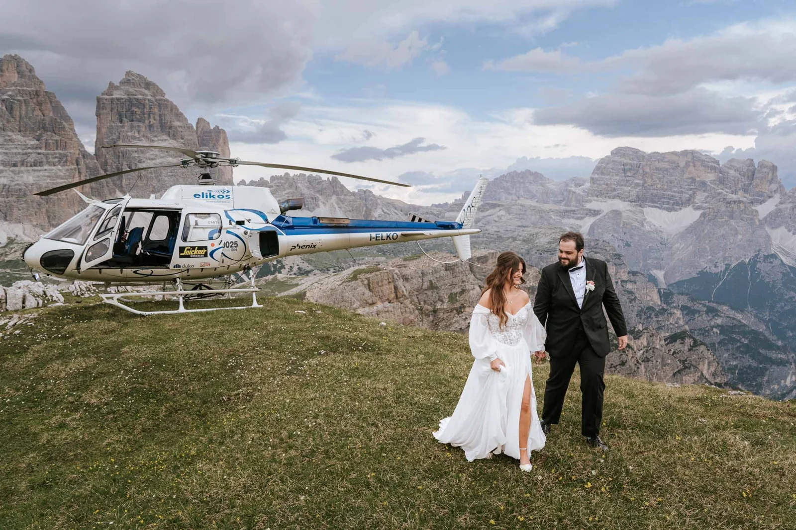
A flight is the boldest way up, but not the only one. If you want the summit feeling without the price, a cable car to the Lagazuoi, Sass Pordoi or Seceda delivers an enormous view for the cost of a ticket — though the lifts open well after sunrise. If you want the day to feel earned, a hike gives you solitude and costs nothing but the early alarm. We often combine them: fly in for the drama, then walk a few minutes to a quieter ledge. Unsure? Tell us how you feel about heights, effort and budget, and we will tell you honestly which one fits.
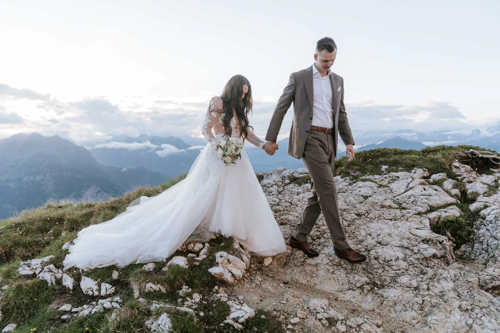
The flight starts at around €2,500 and depends on the landing point, flight time and number of set-downs. Photography, planning and the rest of the day are quoted separately and bundled into one clear price.
Usually only minutes each way — the Dolomites are close. The flight replaces a hike of hours, so most of your time is spent on the mountain, not in transit.
Only on approved sites flown by licensed alpine operators — a ridge, a high meadow or a glacier plateau, not anywhere at will and not inside every protected zone. We confirm the exact spot before booking.
The flight is the setting, not the legal act. Most couples hold a symbolic ceremony up top and sign the legal papers at home; a legal civil marriage in Italy or Austria is possible with paperwork started months ahead.
A helicopter only flies in safe conditions. We keep a flexible window and a backup day, and a beautiful ground-based Plan B — so a grounded morning never means a lost day.
Yes — a second landing, a hut lunch, a lakeside toast or a short hike. We build the whole day around you, not just the flight.
Usually just the two of you, sometimes a witness or two — seats are limited on a small helicopter and every passenger affects the flight. We plan the headcount with the operator.


Usiamo cookie per statistiche anonime (Google Analytics tramite Google Tag Manager) per migliorare il sito. L'analisi parte solo con il tuo consenso. Privacy